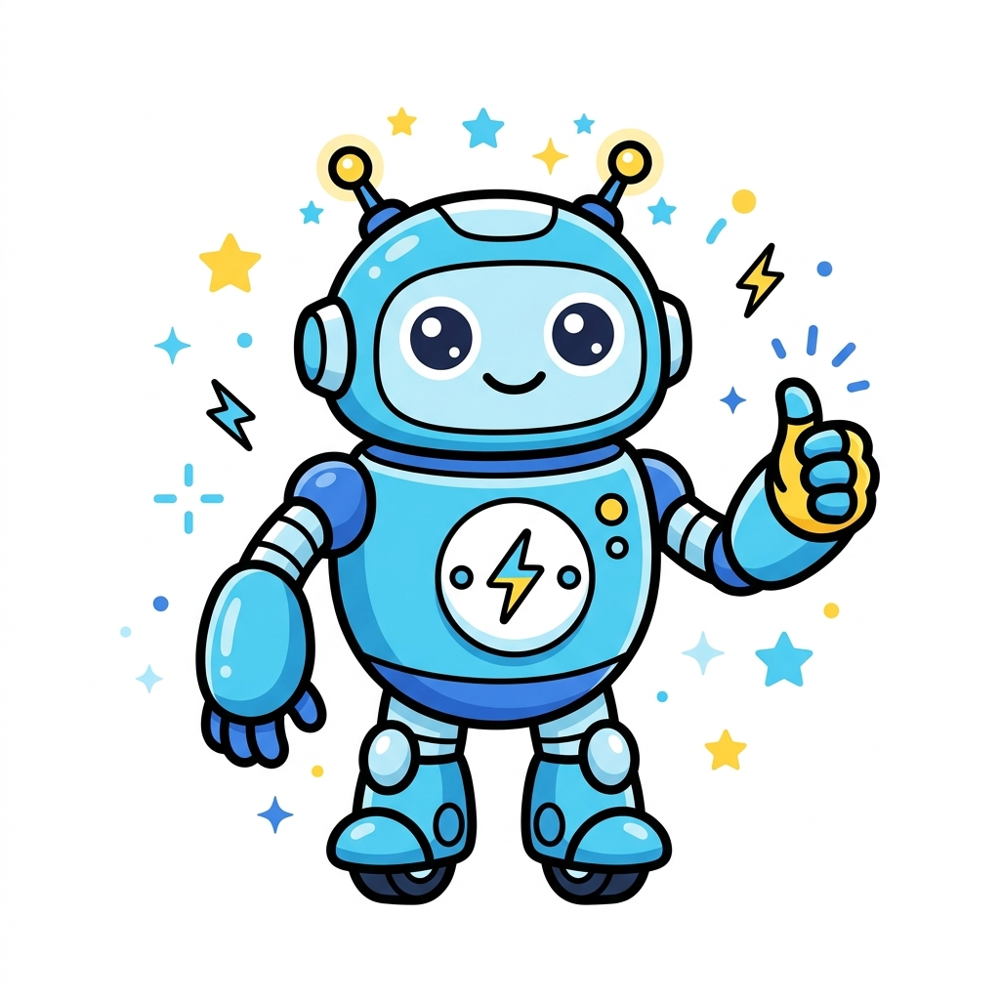

Kebijakan Refund NokosHUB
Kebijakan ini menjelaskan kondisi ketika saldo atau pembayaran dapat direfund, bagaimana proses penanganannya, dan batasan yang perlu dipahami pengguna saat memakai layanan NokosHUB.

1. Kondisi Refund Otomatis
- Order yang gagal dipenuhi oleh provider sesuai mekanisme sistem dapat dikembalikan ke saldo pengguna.
- Order yang dibatalkan sesuai aturan sistem dapat menghasilkan pengembalian saldo secara otomatis.
- Refund mengikuti status transaksi dan log order yang tercatat pada backend NokosHUB.
2. Kondisi yang Tidak Masuk Refund
- OTP sudah berhasil diterima dan order tercatat sukses.
- Kesalahan pembelian akibat pilihan layanan atau negara yang tidak sesuai kebutuhan pengguna.
- Kegagalan yang berasal dari pembatasan aplikasi pihak ketiga, bukan dari sistem NokosHUB.
3. Refund Saldo Deposit
Deposit yang telah masuk dan diverifikasi umumnya dikreditkan menjadi saldo akun. Permintaan pengembalian dana keluar dapat memerlukan verifikasi tambahan dan tetap mengikuti kebijakan internal, catatan transaksi, serta pertimbangan keamanan.
4. Verifikasi Manual
Untuk kasus tertentu, seperti bukti transfer manual atau ketidaksesuaian nominal, tim admin dapat melakukan pemeriksaan manual sebelum refund atau koreksi saldo diproses.
5. Waktu Penanganan
- Refund otomatis biasanya mengikuti proses sistem dan status order secara langsung.
- Refund atau koreksi manual dapat memerlukan waktu tambahan tergantung antrean pemeriksaan.
- Durasi akhir dapat berbeda tergantung jenis kasus dan hasil verifikasi admin.
6. Bukti dan Riwayat Transaksi
Pengguna disarankan menyimpan bukti pembayaran, invoice, dan detail order. Data tersebut dapat membantu mempercepat verifikasi apabila terjadi kendala pada transaksi atau permintaan peninjauan refund.
7. Penyalahgunaan Kebijakan
Permintaan refund yang terbukti disalahgunakan, dimanipulasi, atau diajukan dengan informasi tidak benar dapat ditolak dan berpotensi menyebabkan pembatasan akses akun.
8. Bantuan Pengguna
Jika Anda merasa ada transaksi yang perlu ditinjau, silakan hubungi kanal dukungan resmi NokosHUB dengan menyertakan email akun, invoice, dan detail order terkait.
Kebijakan refund ini dibuat untuk menjaga keseimbangan antara perlindungan pengguna, catatan transaksi yang akurat, dan keamanan operasional platform.